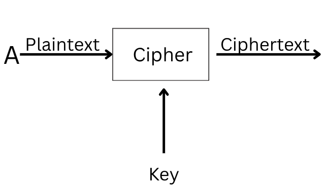
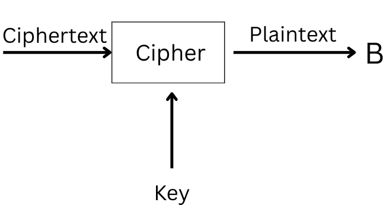
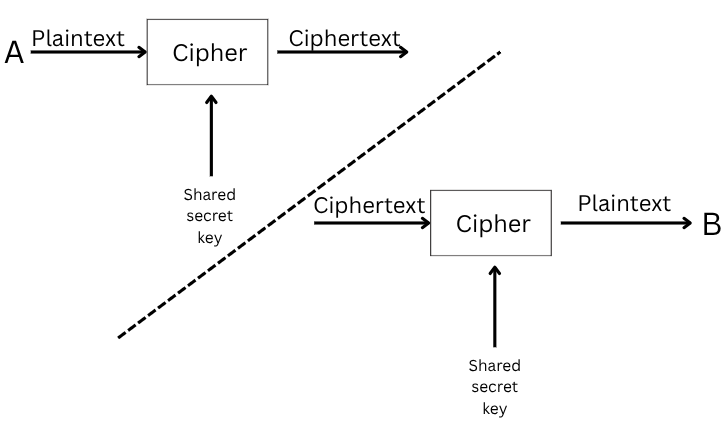
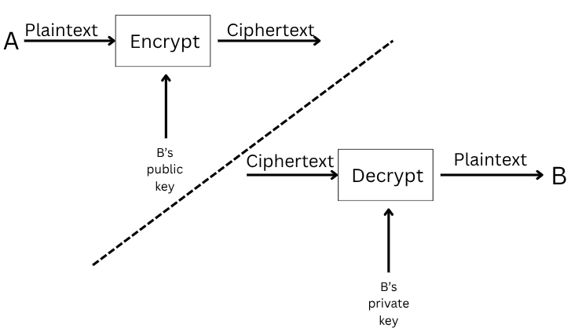

What is Cryptography?
Cryptography is the practice and study of techniques for secure communication, in situations where adversaries might attempt to intercept, read, or modify messages.
Implementing cryptographic protocols is essential whenever a connection is established. For example, in messaging platforms, it prevents third parties from reading conversations. When browsing the internet, it helps verify the identity of accessed websites. When connecting to a remote host using SSH, cryptography secures communication so that no one can eavesdrop.
When downloading a file, cryptography also provides a way of verifying whether the download was successful and complete.
Cryptography is one of the main pillars of the digital world. While networking protocols make it possible for devices across the globe to communicate, cryptography allows us to trust the connection and ensure that communications are authentic.
Complex mathematics and computer science lie at the foundation of cryptography.
As mathematics, algorithms, and processing power evolve, some cryptographic methods become obsolete.
In many countries, the export, import, or use of strong encryption is regulated by law. Violating these regulations can result in severe penalties. Additionally, governments may require companies to provide access to encrypted data under certain circumstances, such as criminal investigations or national security cases. While encryption protects privacy and sensitive information, it can also complicate law enforcement efforts, creating a balance that lawmakers and organizations must carefully navigate. Therefore, understanding both the technical and legal aspects of cryptography is essential for individuals and businesses that handle confidential data.
Basic Terminology
The cryptography literature commonly uses the names Alice (A) for the sender and Bob (B) for the intended receiver.
The message we want to encrypt is called plaintext. It is readable data and can be a photo, credit card information, or simple text.
The plaintext is passed through the encryption algorithm along with the key. This produces ciphertext. The function is part of the cipher.
The cipher is the algorithm used to convert plaintext into ciphertext and vice versa.
To recover the plaintext, we must pass the ciphertext and the correct key through the decryption function. This returns the original plaintext.
Key Terms
Plaintext – the original, readable message before encryption.
Ciphertext – the scrambled, unreadable version of the message after encryption. No information about the plaintext should be obtainable from the ciphertext alone.
Cipher – an algorithm or method to convert plaintext to ciphertext and vice versa.
Key – a string of bits used by the cipher to encrypt or decrypt. The cipher can be public knowledge, but the key must remain secret.
Encryption – the process of converting plaintext into ciphertext using a cipher and a key.
Decryption – the process of converting ciphertext back into plaintext using a cipher and a key. Recovering the plaintext without the key should be infeasible.
History of Cryptography
1. Ancient Cryptography
Cryptography began in ancient times when people needed to send secret messages, especially in military or diplomatic contexts.
Ancient Egypt: The earliest examples of cryptography come from around 1900 BCE, where scribes used special symbols and simple substitutions to hide information.
Ancient Rome: Julius Caesar used the famous Caesar Cipher. Letters in a message were shifted by a fixed number in the alphabet. For example, with a shift of 3, "A" becomes "D" and "B" becomes "E". This is a simple substitution cipher.
2. 19th Century – Early Modern Cryptography
With the Industrial Revolution and long-distance communications, cryptography became increasingly important.
- Telegraphy and Morse code: Messages transmitted by telegraph required special codes for security.
- Military cryptography: Armies used mechanical ciphers to protect communications during wars.
3. 20th Century – Mechanical and Electronic Cryptography
The major leap in cryptography came during World War I and II.
- Enigma Machine: Used by the Nazis, this electromechanical machine created codes that were extremely hard to break.
- Bletchley Park and Alan Turing: The British team led by Turing broke the Enigma codes, changing the course of the war.
- Early electronic cryptography: Computers began to be used for encrypting and decrypting messages.
4. Cryptography in the Digital Age
With the advent of the internet, cryptography became essential for digital security.
- Symmetric cryptography: Same key for encryption and decryption (e.g., AES).
- Asymmetric cryptography: Different keys for encryption and decryption (e.g., RSA, Diffie-Hellman), used for digital signatures and secure transactions.
- Modern cryptography protects nearly all digital communication: emails, instant messaging, online payments, and secure servers.
5. Future of Cryptography
Cryptography continues to evolve:
- Quantum cryptography: Uses quantum mechanics to create theoretically unbreakable communication.
- Post-quantum algorithms: Being developed to resist future quantum computers, which could break many current cryptographic methods.
Types of Encryption
Symmetric Encryption
Symmetric encryption (also called private key cryptography) uses the same key to both encrypt and decrypt the data. Keeping the key secret is mandatory, and maintaining secrecy becomes increasingly difficult if there are many recipients.
An example is when you protect a document with a password and then want to send it to someone. The encrypted document can be transmitted, but the password cannot. Anyone intercepting the communication could access the key and break the encryption, defeating its purpose.
Examples:
DES (Data Encryption Standard) became a standard in 1977 and used a 56-bit key. With advancements in computing power, it was broken in 1999 in less than a day.
3DES (Triple Data Encryption Standard) applies DES three times. The key size is 168 bits, although it is as effective as a 112-bit key. It was deprecated in 2019 and should be replaced by AES, but may still be found in legacy systems.
AES (Advanced Encryption Standard) was adopted in 2001. It supports key sizes of 128, 192, or 256 bits and is widely used today.
Asymmetric Encryption
Unlike symmetric encryption, which uses the same key for both encryption and decryption, asymmetric encryption uses a pair of keys: one for encryption and one for decryption. It encrypts data using the public key, which is why it is also called public key cryptography.
Two well-known examples are RSA and Diffie-Hellman. The two keys are called the public key and the private key. Data is encrypted with the public key and decrypted with the private key. The private key must remain secret.
Asymmetric encryption is generally slower and uses larger keys than symmetric encryption. For example, RSA commonly uses 2048, 3072, or 4096-bit keys.
Asymmetric encryption relies on mathematical problems that are easy to compute in one direction but practically impossible to reverse without the key. These include integer factorization (RSA) and discrete logarithms (Diffie-Hellman, ECC). Solving them with today’s technology would take millions of years.
The key point to remember is that asymmetric encryption provides a public key that you share with everyone, and a private key which must remain secret.